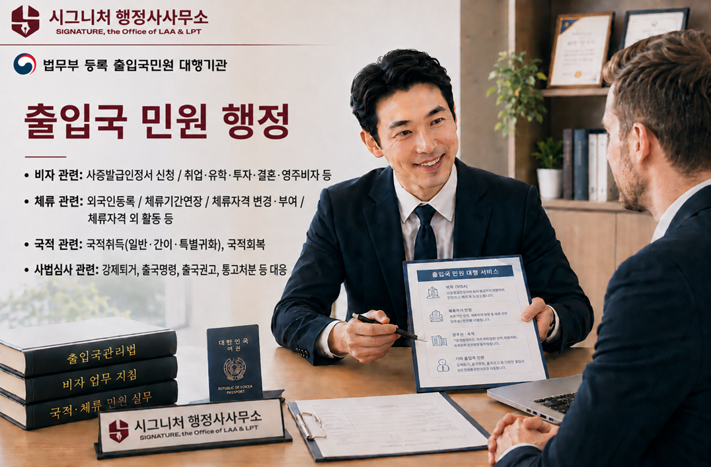
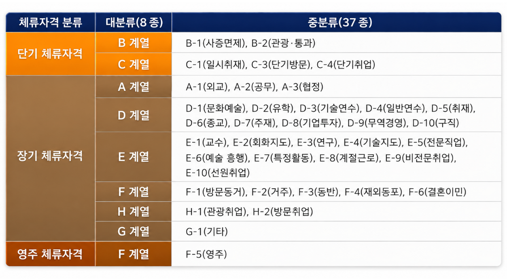
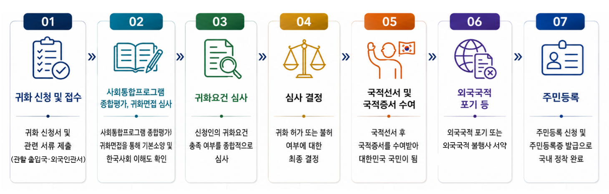

출입국 민원 행정
출입국 민원 행정 개요
하루가 다르게 급변하는 국제화 시대에 외국인의 국내 체류와 취업, 유학, 투자, 결혼이민, 영주, 국적 등의 출입국 민원 관련 업무가 꾸준히 증가하고 있는 추세입니다. 이에 따라 「비자 발급」, 「체류기간 연장」, 「체류자격 변경」, 「체류자격 외 활동」, 「영주권 신청」, 「국적 취득」 등 다양한 출입국 관련 민원의 수요도 함께 증가하고 있습니다.
하지만, 출입국 업무관련 법령과 지침 등이 복잡하고, 국가의 정책 방향 등에 따라 출입국 관련 업무처리의 내부지침이 수시로 개정·변경되기 때문에 일반인이 진행하기에는 많은 어려움이 있습니다. 자칫 관련 서류 하나의 누락이나 작성상 오류만으로도 심사가 지연되거나 불허될 수 있는 등 크고 작은 문제가 발생할 수 있습니다.

「법무부 등록 출입국민원 대행기관」으로서, 시그니처 행정사사무소는 의뢰인의 상황을 면밀히 검토하고 분석하여 최적의 해결안을 제안하고, 필요한 제반 서류와 절차를 철저하고 꼼꼼하게 준비하여 의뢰인의 출입국 민원을 대행해드립니다.
출입국 민원 관련 법령 등
- • 출입국관리법 / 국적법 / 난민법
- • 재외동포기본법 / 재외동포의 출입국과 법적 지위에 관한 법률
- • 재한외국인 처우 기본법
- • 외국인근로자의 고용 등에 관한 법률
- • 외국인투자 촉진법
- • 벤처기업육성에 관한 특별법 / 벤처투자 촉진에 관한 법률
- • 다문화가족지원법 / 관련 지방자치법규
- • 기타 국제법 상 협약, 규약 및 협정 등
체류자격 분류

주요 출입국 민원 컨설팅 서비스
- 비자 관련: 사증발급인정서 신청 / 취업·유학·투자·결혼·영주 비자 등
- 체류 관련: 외국인등록 / 체류기간 연장 / 체류자격 변경·부여 / 체류자격 외 활동
- 국적 관련: 국적취득(일반·간이·특별귀화), 국적회복
- 사범심사 관련: 강제퇴거, 출국명령, 출국권고, 통고처분 등 대응
• E-7(특정활동)
- ✓ 전문적인 지식기술 및 기능을 가진 외국인력 도입을 위해 전문/준전문/일반기능/숙련기능 인력으로 도입직종을 구분하여 탄력적으로 운영
- ✓ 외국인력 자격요건: (일반요건) 도입직종 연관 분야 석사 이상, 학사 + 1년 이상 경력, 5년 이상 경력 / (특별우대요건) 세계500대 기업 1년 이상 경력, 세계유수대학 학사, 국내 전문학사, 학사 이상 등
- ✓ 고용업체 요건: 사증발급인정서 발급 제한이 없고 허용직종별 고용업체 요건·고용허용 인원·최소임금 요건 등 충족, 세금체납 사실 없음을 증명
- ✓ 제출서류: 고용업체(고용 필요성 입증서류 - 고용추천서, 초청사유서 등 기타) / 외국인(여권사본, 고용계약서, 자격요건 입증서류 등 기타)
- ✓ E-7-1(전문인력): 67개 직종, 고용업체의 업종과 채용조건이 전문 외국인력의 전공, 경력과 일치성 또는 관련성 필수
• K-POINT E-7-4
- ✓ E-7-4 비자는 한국 사회와 산업에 기여할 수 있는 숙련기능인력을 위한 점수제 비자로, 한국에서 일정기간 근무한 외국인 근로자가 장기적으로 안정된 체류와 취업을 이어갈 수 있도록 마련된 제도
- ✓ 외국인력 필수요건: 최근 10년간 E-9, E-10, H-2로 4년 이상 현 근무처에서 정상 근로 중인 등록외국인 / 현 근무처에서 연봉 2600만원 이상, 향후 2년 이상 E-7-4 고용계약 / 현재 1년 이상 근속중인 기업의 추천 받은 자 / 점수제 총점 300점에서 가점 포함 200점 이상인 자
- ✓ 고용기업 요건: 현재 E-9, E-10, H-2 인력을 1명 이상 정상 고용하고 기존 숙련기능 점수제 적용 고용기업일 것 / 현재 국민고용인원의 30% 이내일 것
• F-2-99
- ✓ 신청대상: A-1(외교)~A-3(협정)까지의 체류자격 이외의 체류자격으로 5년 이상 국내에 계속 체류하여 생활근거지가 국내에 있는 사람
- ✓ 신청요건: 민법상 성년 / 법령 준수 등 품행단정 / 생계유지 능력 / 한국어 능력과 한국 문화의 이해 등 기본 소양
- ✓ 신청대상체류자격: 주 체류자가 D-1, D-5~D-9, E-6-1, E-6-3, E-1~E-5, E-7, D-8 / 주 체류자의 배우자 및 미성년 자녀로 합법 체류 중인 외국인(F-1, F-3)
• F-2-7
- ✓ 신청대상: 상장법인 종사자 / 유망산업분야 종사자 / 전문직 종사자 / 유학인재 / 잠재적 우수인재
- ✓ 공통 심사기준: 결격사유에 해당하지 않을 것 / 평가항목별(나이, 학력, 기본소양, 연간소득) 배점의 합산점수가 80점 이상일 것 / 취업 제한분야에 종사하지 않았을 것 / 결핵 등 전염병 등이 없을 것
- ✓ 제출서류: 여권, 외국인등록증 등 공통서류 / 신청대상별 입증서류 / 점수제 평가를 위한 서류 / 결격사유 심사를 위한 서류 / 외국인등록사항에 따른 서류 등 기타
• F-4
- ✓ 신청대상: 대한민국 국적을 보유하였던 사람으로 외국국적을 취득한 사람 / 부모의 일방 또는 조부모의 일방이 대한민국 국적을 보유하였던 사람으로서 외국국적을 취득한 사람
- ✓ 제한 대상: 특정강력범죄로 형을 선고받은 경우 / 사회적 중대범죄로 금고 이상 형을 선고받은 경우 / 최근 5년 이내 전술한 범죄 이외의 범죄로 금고 이상 형을 선고받은 경우
- ✓ 단순노무 및 사행행위 등 제외, 국내 취업활동 허용
- ✓ 26년 2월 12일부로 H-2, F-4를 F-4로 통합, H-2 신규발급 중단
- ✓ 공통/추가 제출서류: 한국어능력·해외범죄경력 입증자료 등 / 가족관계 입증서류 등 기타
• F-5
- ✓ 신청대상: 민법상 성년으로서 D-7 ~ E-7까지의 체류자격이나 F-2로 5년 이상 국내 체류자 / 국민의 또는 F-5 소지자의 배우자 또는 미성년 자녀로서 2년 이상 국내 체류자 / F-4로 2년 이상 국내 체류자 등 기타
- ✓ 신청요건: 법령 준수 등 품행단정 / 생계유지 및 연간소득 능력 / 한국어 능력과 한국 문화의 이해 등 기본 소양 / 신원보증서 (일부 경우 제외)
• F-6
- ✓ 신청대상: 국내에서 대한민국 국민과 혼인이 유효하게 성립한 상황에서 결혼생활의 지속을 위해 국내 체류를 하고자 하는 사람 / 혼인관계에서 출생한 자녀를 양육하고 있는 부 또는 모인 사람 / 혼인상태로 국내 체류하던 중 그 배우자의 사망이나 실종, 기타 자신의 귀책사유 없이 정상적인 혼인관계 유지가 불가한 사람
- ✓ 신청요건: 초청인의 소득요건
- ✓ 제출서류: 기본서류(통합신청서, 외국인직업신고서, 초청장 등), 대한민국 배우자의 주거요건 및 소득요건 서류, 외국인배우자 의사소통 요건 서류, 교제입증 서류 등 기타
• 귀화에 의한 국적취득
귀화 허가는 일반적으로 다음과 같은 절차를 거쳐 진행됩니다.

✓ 일반귀화
- - 대한민국 국적을 취득한 적 없는 외국인이 일반 귀화요건을 갖춘 경우, 귀화허가를 받아 대한민국 국적을 취득하는 것
- - 일반요건: 민법상 성년으로서 5년 이상 계속 국내 주소 유지 / 영주권 전치주의(F-5 소지자) / 품행단정, 생계유지능력, 한국어 능력과 한국 풍습의 이해 등 기본소양 구비 / 국가안전보장, 질서유지, 공공복리에 무해할 것
- - 제출서류: 귀화허가 신청서 등 기본서류 / 2인 이상 추천서 / 생계유지능력 입증서류 / 범죄경력 관련 서류 / 가족관계등록부 생성에 필요한 서류 등 기타
✓ 간이귀화
- - 우리나라와 특별한 혈연적, 지연적 관계에 있는 외국인이 일반귀화 보다 수월하게 대한민국 국적을 취득하는 것으로 3년 이상 거주에 의한 간이귀화, 혼인에 의한 간이귀화, 혼인단절에 의한 간이귀화 등
- - 일반요건: 민법상 성년으로서 3년 이상 계속 국내 주소 유지 / 품행단정, 생계유지능력, 한국어 능력과 한국 풍습의 이해 등 기본소양 구비 / 국가안전보장, 질서유지, 공공복리에 무해할 것
- - 제출서류: 귀화허가 신청서 등 기본서류 / 생계유지능력 입증서류 / 범죄경력 관련 서류 / 가족관계등록부 생성에 필요한 서류 등 기타
✓ 특별귀화
- - 부 또는 모가 현재 대한민국 국민인 사람, 대한민국에 특별한 공로가 있는 사람, 과학경제문화체육 등 특정분야에서 매우 우수한 능력을 보유하여 대한민국 국익에 기여할 것으로 인정되는 사람이 귀화를 통해 대한민국 국적을 취득하는 것
- - 제출서류: 귀화허가 신청서 등 기본서류 / 범죄경력 관련 서류 / 가족관계등록부 생성에 필요한 서류 등 기타 서류
• 국적회복
- ✓ 대한민국 국민이었던 사람이 외국국적을 취득하여 대한민국 국적을 상실한 후 다시 대한민국 국적을 회복하는 것으로, 일반 국적회복(중국 제외)과 중국동포 1세 국적회복으로 구분
- ✓ 과거 외국국적 취득 시, 가족관계등록부가 국적상실로 제적되지 않은 경우, 국적회복허가 신청과 국적상실 신고의 동시진행 필요
- ✓ 제출서류: 국적회복허가 신청서, 국적회복진술서, 대한민국국민이었던 사실입증 서류 등 기타 서류
• 출입국 사범심사
- ✓ 국내 체류 중인 체류자격 소지자가 출입국관리법의 위반 행위나 국내에서 범죄를 저지른 경우, 체류지 관할 출입국·외국인관서의 사범과에서 조사 및 심사를 거치는 것으로, 사범심사 결정으로 체류허가 여부 결정 및 강제퇴거, 출국명령, 출국권고, 통고처분 등의 대상이 됩니다.
- ✓ 준비서류: 기본서류(여권, 외국인등록증 등), 탄원서 및 반성문, 준법서약각서 등을 포함한 인도적 사유서 및 법리적 소명서, 기타 서류
“의뢰인의 대한민국 체류의 시작과 정착, 시그니처 행정사사무소가 그 여정을 함께 하겠습니다!”
지금 바로 상담 신청하세요!